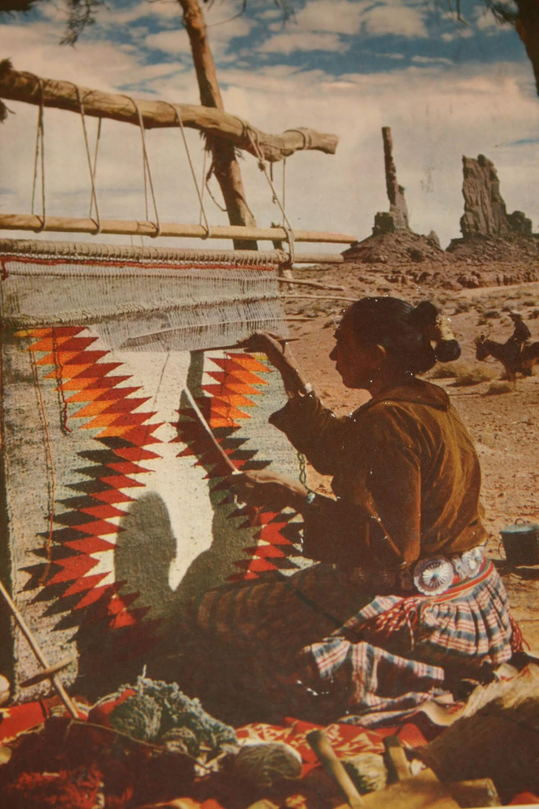
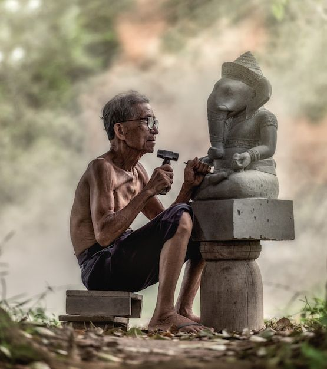

Meet the Makers
The heart and soul of Kaleido. Discover the stories, traditions, and passions woven into every unique creation.

Priya Sharma
Ceramic Artist
Jaipur, Rajasthan
"My work is a dialogue between earth and hand, shaping clay into vessels of modern tradition."
View Profile →

Rajkumari
Textile Weaver
Varanasi, Uttar Pradesh
"Each thread tells a story of my ancestors. I simply weave them together for the world to see."
View Profile →

Anuj Desai
Wood Carver
Srinagar, Kashmir
"From the heart of the walnut tree, I carve intricate patterns that echo the beauty of the valley."
View Profile →Are You an Artisan?
Join our vibrant community of creators. Let our AI tools handle the marketing, so you can focus on what you do best—creating.
Join Kaleido Today